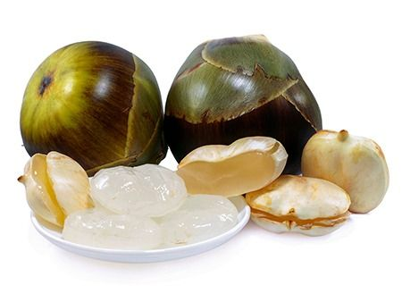

Ice apple

| Index |
|---|
| Short description |
| Nutritional value |
| Health benefits |
| Best time to eat |
| Who shoud avoid |
| Fun fact |
Short Description
Ice apple, also known as Tadgola or Palm Fruit, is a translucent, jelly-like fruit obtained from palm trees. It is commonly consumed in India during summer for its cooling properties. Ice apple has a mildly sweet taste and high water content, making it ideal for hot climates.
Nutritional Value
| Nutrient | Amount |
|---|---|
| Calories | 43 kcal |
| Carbohydrates | 10 g |
| Dietary Fiber | Moderate |
| Calcium | Present |
| Potassium | Present |
| Water | 87% |
Health Benefits
- Cools the body naturally and reduces heat
- Prevents dehydration during summer
- Improves digestion
- Maintains electrolyte balance
- Supports bone health
Best Time to Eat
Ice apple is best eaten during hot summer afternoons when the body temperature is high.It helps cool the body, prevent heatstroke, and restore lost fluids.
Avoid eating ice apple:
- Early morning
- Late at night
- During cold or rainy seasons
Best practice: Eat fresh ice apple at room temperature in summer.
Who Should Avoid
- People with cold, cough, or fever
- Those with weak digestion
- People living in cold climates, as it cools the body excessively
Fun Fact
- Ice apple is a natural body coolant
- It is often used as a natural remedy for heatstroke
- Ice apple spoils quickly and must be eaten fresh